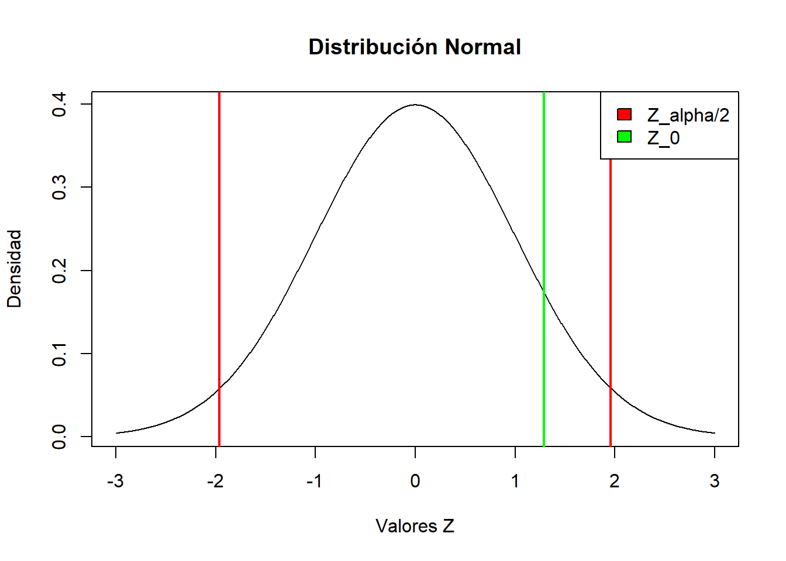

#La primera muestra de anuncios de revistas colombianas, de 203, 52 eran de deportes
p1 <- (52/203)
p1[1] 0.2561576#La primera muestra de anuncios de revistas brasilera, de 270, 56 eran de deportes
p2 <- (56/270)
p2[1] 0.2074074De una muestra aleatoria de 203 anuncios publicados en revistas colombianas, 52 eran de deportes. De una muestra aleatoria independiente de 270 anuncios publicados en revistas brasileras, 56 eran de deportes. Usando un nivel del 5%, contrastar frente a una alternativa bilateral, la hipótesis nula de que las proporciones de anuncios cómicos de las revistas colombianas y americanas son iguales. Contrastar las hipótesis por las 3 alternativas:
Regla de decisiones
Método grafico
P-valor
Prueba prop.test en R.
--------------------------------------------------------------------------------------------------------------------
Primero que todo, estableceremos las hipotesis
\(H_0\) (Hipotesis Nula) = \(P1 - P2 \neq 0\) (Las proporciones no son iguales)
\(H_1\) (Hipotesis Alternativa) = \(P1 - P2 = 0\) (Las proporciones son iguales)
Con esto en mente, hallamos la proporcion para las dos muestras:
#La primera muestra de anuncios de revistas colombianas, de 203, 52 eran de deportes
p1 <- (52/203)
p1[1] 0.2561576#La primera muestra de anuncios de revistas brasilera, de 270, 56 eran de deportes
p2 <- (56/270)
p2[1] 0.2074074Con esto en mente, podemos hallar la probabilidad del p combinado
\[\hat{p}_{\text{combinado}} = \frac{(n_1)(p_1)+(n_2)(p_2)}{(n_1)+(n_2)}\] En este caso, seria de la siguiente manera:
\[\hat{p}_{\text{combinado}} = \frac{(203)(0.256)+(270)(0.207)}{203+270} = \frac{107.858}{473} = 0.228\]
Con el p combinado encontrado, pasaremos a hallar el estadistico de prueba.
La formula para hallar el estadistico de prueba en una prueba de diferencia de proporciones con dos muestras es la siguiente:
\[Z = \frac{\hat{p}_1 - \hat{p}_2}{\sqrt{\frac{\hat{p}_0\cdot(1-{\hat{p}_0})}{n_1}+\frac{\hat{p}_0\cdot(1-{\hat{p}_0})}{n_2}}}\]
Reemplazando los valores, tendriamos de la siguiente manera:
\[Z = \frac{0.256 - 0.207}{\sqrt{\frac{0.228\cdot(1-0.228)}{203}+\frac{0.228\cdot(1-0.228)}{270}}} = \frac{0.049}{0.038} = 1.289\]
Para una prueba al nivel de 5%, se tiene que \(\alpha=0.05\)
Entonces, para una prueba bilateral, se tiene la siguiente toma de decisiones:
Si \(Z \ge Z_{\frac{\alpha}{2}}\) o \(Z \le -Z_{\frac{\alpha}{2}}\) , entonces se rechazara \(H_0\), de lo contrario, se acepta \(H_0\)
En este caso:
\[Z_{\frac{\alpha}{2}} = 1.96\]
Como en este caso, \(1.96 > 1.289\), se aceptara la \(H_0\).
x_valores = seq(-3, 3, length=1000)
plot(x_valores, dnorm(x_valores), type="l", ylab="Densidad", xlab="Valores Z", main="Distribución Normal")
valor_Z_0 = 1.289
abline(v = valor_Z_0, col = "green", lwd = 2)
valor_critico_inf = -1.96
abline(v = valor_critico_inf, col = "red", lwd = 2)
valor_critico_sup = 1.96
abline(v = valor_critico_sup, col = "red", lwd = 2)
legend("topright", legend=c("Z_alpha/2", "Z_0"),
fill=c("red","green"))
Como se observa en la grafica, \(Z_0\) no cae en la region critica, acotada por \(Z_{\frac{\alpha}{2}} = 1.96\). En este caso, no se rechaza la \(H_0\)
Para el p-valor, tenemos que:
si \(P-valor\le\alpha\), se rechaza \(H_0\)
Con esto en mente, se tiene lo siguiente:
\[P = 2[1-\phi(Z_0)]\] \[P = 2[1-\phi(1.289)]\] \[P = [2-1.7994]\] \[P = 0.2006\]
Entonces, como \(0.2006 > 0.05\), es decir, \(P-Valor > \alpha\), no se puede rechazar a \(H_0\).
Ahora, usando el comando integrado en R, podemos hallar la proporcion:
N1 <- 203
X1 <- 52
N2 <-270
X2 <-56Z <- prop.test(x= c(X1,X2), n = c(N1,N2), alternative = "two.sided")
print(Z)
2-sample test for equality of proportions with continuity correction
data: c(X1, X2) out of c(N1, N2)
X-squared = 1.2986, df = 1, p-value = 0.2545
alternative hypothesis: two.sided
95 percent confidence interval:
-0.03266567 0.13016613
sample estimates:
prop 1 prop 2
0.2561576 0.2074074 De esta prueba, podemos sacar varias conclusiones:
El p-valor tiene un valor de 0.2112
Tomando en cuenta el nivel de significancia del 0.05, como el p-valor es mayor, no se rechaza la hipotesis nula (H0).
Como conclusion, no hay evidencias y hay suficientes pruebas estadisticas para argumentar que las proporciones de los anuncios en las revistas de deporte Colombianas y Brasileras son iguales.
The echo: false option disables the printing of code (only output is displayed).